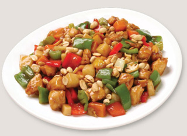

Hoje sabe-se que não foi através de Marco Polo que a Europa conheceu o macarrão. Mas o relato de suas aventuras despertou nos europeus a curiosidade sobre as maravilhas do Oriente.
Venha você também se maravilhar com os deliciosos sabores do Oriente em nossos restaurantes ou em sua própria casa!
